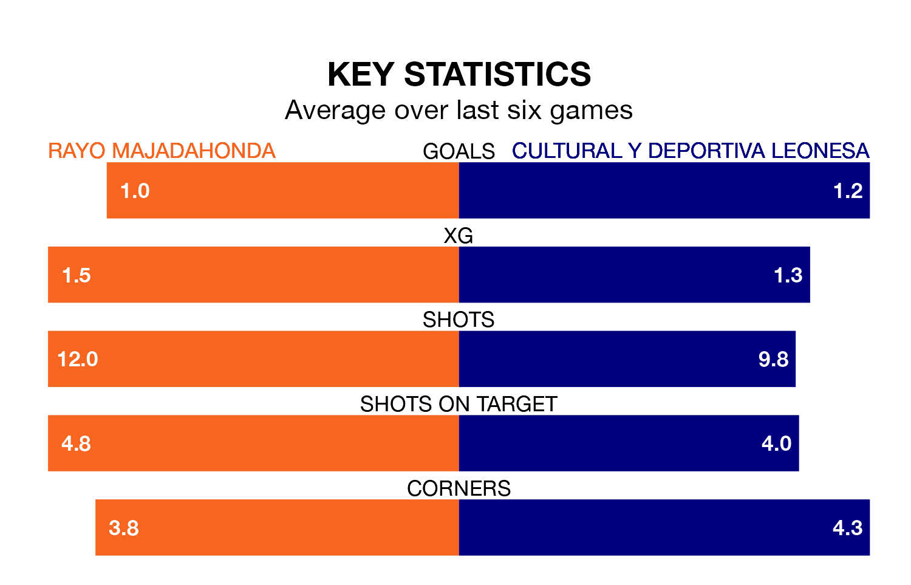

Rayo Majadahonda host Cultural y Deportiva Leonesa in Sunday's early match at Miniestadio Cerro del Espino looking to bounce back from defeat last time out in Primera Division RFEF Group 1.
Rayo, who sit 17th in the league after 20 games, fell to a 0-1 home defeat to SD Logroñés on January 21.
They face a Cultural y Deportiva Leonesa side who secured a draw in their last match, a 1-1 tie with CF Fuenlabrada, and who sit fourth in the table.
With 16 goals in 20 games so far this season, Rayo are scoring at below the league average rate with 0.8 goals per game. And they are conceding more than average, letting in 25 goals at a rate of 1.2 per game.
Cultural y Deportiva Leonesa, meanwhile, are average scorers, with 1.0 goal per game. They have conceded 0.6 goals per game.
In the last five years, Rayo and Cultural y Deportiva Leonesa have played each other on five occasions. Rayo won three of them, Cultural y Deportiva Leonesa one, and they drew once.
On average, Rayo scored 1.6 goals and Cultural y Deportiva Leonesa 0.8 in those matches.
Their last meeting was on October 8, when Cultural y Deportiva Leonesa won 2-1 at home.
The home team are in mixed form in Primera Division RFEF Group 1, with two wins and two draws from their last six games.
With three wins and two draws over that period, the visitors' form is better – they have taken 11 points from 18, compared to Rayo's eight.
Updated: 08:51 (UTC), 25/01/24